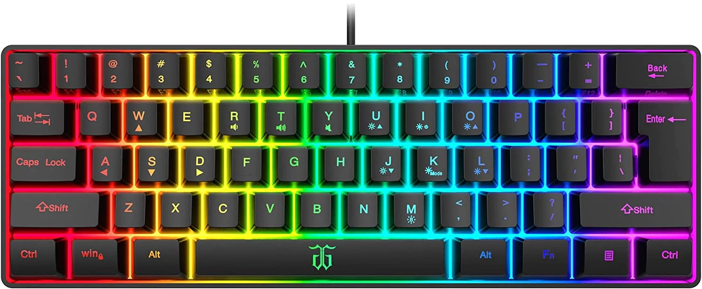
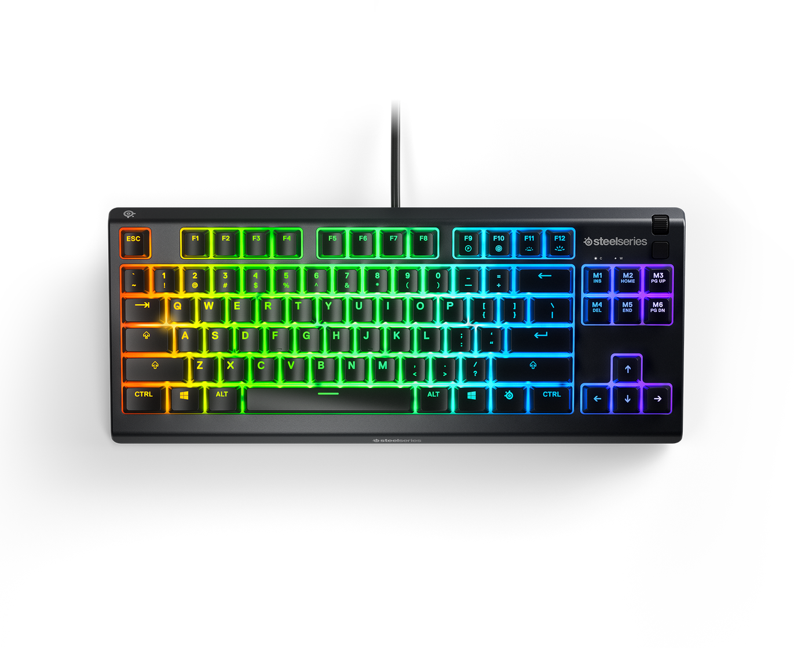
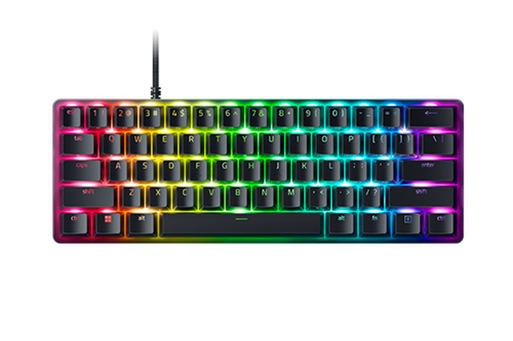
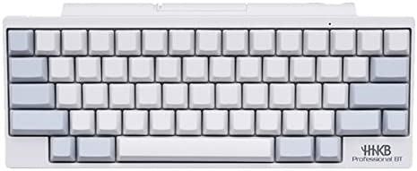
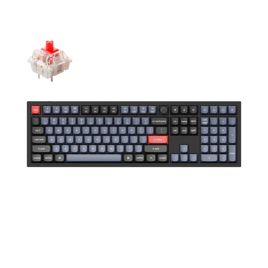
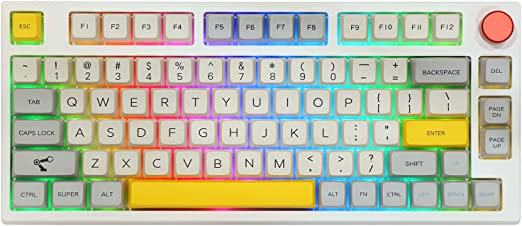
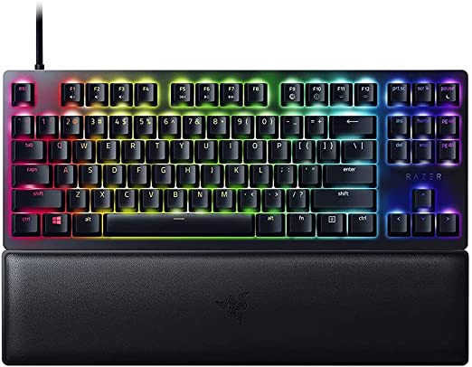

A keyboard is a lot like a miniature computer. It has its own processor and circuitry that carries information to and from that processor. A large part of this circuitry makes up the key matrix. The key matrix is a grid of circuits underneath the keys. They have three switch varieties:
There are different types of keyboards. There are:
For people who want their keyboard to be clean
For people who play rhythm games
For people who want a better customizable keyboard
For Budget
Snpurdiri 60% Membrane Gaming Keyboard

The Snpurdriri 60% membrane keyboard is the best budget keyboard for gamers. It's 60% and has a mechanical feel, and it's waterproof, has 10 rgb modes 8 single rainbow backlights. And the price of the keyboard is a whopping $15.
For Gaming
Steelseries APEX TKL Gaming Keyboard

The Steelseries APEX TKL Gaming Keyboard is the best gaming keyboard for gamers. It's TKL and has a very good mechanical feel and it's waterproof. It has 8 rgb modes that you can change in games and in Discord.
For Minimalism
Razer Huntsman Mini

The Razer Huntsman Mini is a 60% keyboard with minimalism look and looks very clean. It has 16.8 millon color options and has up to 5 keyboard profiles. It's 1000hz so it's very good for rhythm games.
For High End
Happy Hacking Keyboard

The Happy Hacking keyboard is the best keyboard for people who want to spend ALOT of money on a keyboard. It has a different layout than most 75% keyboards. The keyboard layout will improve your typing speed. It's also wireless.
For Expensive Custom
Keychron Q6 Custom Mechanical Keyboard

The Keychron Q6 is the more expensive, high-end custom keyboard that you can get. It has mutiple options to get the keyboard like the barebone verison, differnet switches, differnet colors, etc. It's a full sized keyboard.
For Custom
EPOMAKER Theory TH80 75% Hot Swappable RGB

The EPOMAKER TH80 is a great custom keyboard which is on the cheaper end. It's a 75% keyboard and it has a knob to change the keyboard settings to your likings. It's Hot Swappable so that means you can change switches without having to desolider them to replace them. They have a variety of switches.
For Rhythm Gamers
Razer Huntsman V2 TKL

The Razer Huntsman V2 TKL is the best keyboard for rhythm gamers. It has 8000hz so it will have 0 delay when you press a lot of keys at the same time. It has Double PBT shot keycaps and you may or may not like it because of how rough it is.
The polling rate of a keyboard is the frequency of how often your keyboard sends data to your computer and is measured in Hertz (Hz). The faster the polling rate, the quicker the response time of each keypress.
It's best to have at least a 500 to 1000 Hz polling rate for gaming.
For example, if you had a keyboard with a 125 Hz polling rate,
it'd be eight times slower at responding to each keypress when compared to a keyboard with a 1000 Hz polling rate.
With gaming, every millisecond matters and could mean the difference between getting the first shot out or dodging bullets faster.